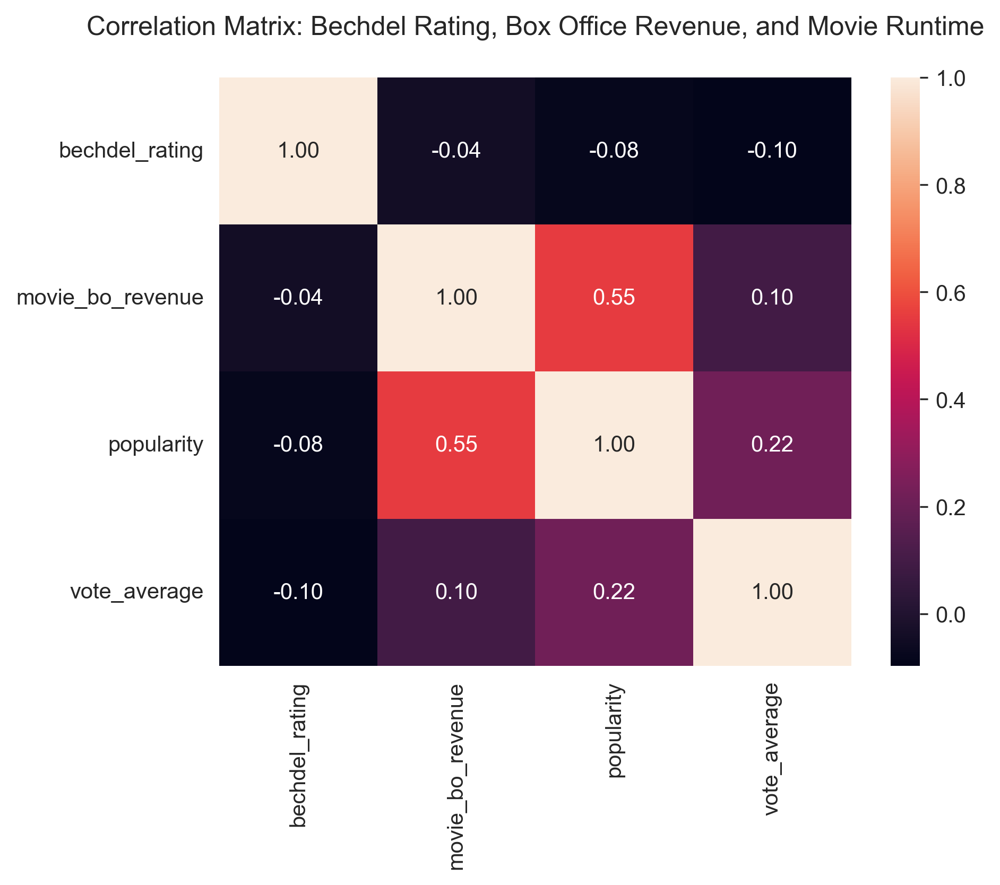

Quality of the increase
Now is time to evaluate the quality of this encouraging involvement of women in the film
industry!
Actors age
First, we will look at the evolution of the age of male and female actors. Why? Simply because
young women are generally prefered than old women, while we are supposed to appreciate men at
every age.
Well well well... It seems pretty clear that there is no evolution among the years, but that the
difference between genders stays tremendously stable!
Actors roles
We want to plot the main roles of the characters in wordclouds: one for the men and one for the
women characters.
Please note that most of the characters collected in the dataset are only mentioned by name, and not by
role. Thus, we will only plot the roles of the characters that have a role. In a wordcloud, the most
mentionned roles are represented by a bigger size.
Looking at these wordclouds, it seems quite clear that women mostly are designated as family members,
while men mainly are designated by their job position.
And now, we want to plot the roles related to other roles (for
instance: in "Mother's girlfriend", we will represent "Girlfriend")
Here, the data are more chaotic, so there is not much to say, appart from the fact that there is
again a predominance of family members in women, while men have job positions.
We can also notice that
Bechdel Test
Have you ever heard of the Bechdel Test? It's a set of criteria that a film must meet
to be
considered minimally adequate in representing women. Popularized by Alison Bechdel
back in 1985 (the original
illustration is shown on the right),
the test is incredibly simple:
- There must be at least two named women in the film;
- They must talk to each other;
- About something other than a man.
Sounds easy, right? In an ideal world, every film would effortlessly pass this test.
Yet, the
reality is a bit more complex...
We've managed to gather Bechdel Score data for 2,658 films, thanks to the API from
the Bechdel Test website. It is important to note
that anyone can enter data on whether a film passes the Bechdel Test or not, on a scale to 0 to 3.
The lingering question remains: Has the Bechdel Test influenced the
audience's
perception and the representation of women in the film industry?
Imagine how different the cinematic landscape could be if more films met these criteria.
What do
you think? Do films that pass the Bechdel Test tend to resonate more with audiences, or is
the
impact more subtle, perhaps reflected in the gradual evolution of female roles in cinema?
Let's
delve into this intriguing topic together.
However, we need to be careful with those data, because not all movies from the CMU Dataset have
been evaluated by the Bechdel test. We should also consider that there is a bias on the set of
movies that were entered by hand in this Bechdel dataset.
As one can see, only between 16 and 140 movies were evaluated per year, which is a very small
number compared to the total number of movies released per year (between 1980 and 2010). Let's
start this analysis, by looking at the evolution of the Bechdel rating through the years.
-->
And do you think that movies with higher Bechdel rating involve more women ?
It is obvious that a higher Bechdel rating typically indicates a greater representation of
women (>20% increase for movies which completely pass the Bechdel test compared to the ones
that do not), this is a result we could reasonabily have expected, considering the test's
inherent design. So movies with higher number of actress tends
to have
a higher Bechdel rating. But does this better rating influences the impact on the audience?
Here, we'll take 2 metrics: the popularity of the movie, and the rating of the movie.
There's an intriguing pattern in these glitzy displays: movies that only score 1 at the
Bechdel test are often the most popular onesy. Why is
this so? The answers aren't straightforward. This could be multiple confounder into this
complex
tapestry. It could be that the film
industry, with its influential might, chooses to shine a brighter spotlight on movies where
male characters take the center stage, and where women only are... present.
Or perhaps, the audience, like a river, naturally flows towards the stories
echoing a significant male
presence. So is it the chicken or the egg?
Let's see if we can find any pattern between the percentage of actresses and the rating:
There is a very small correlation between the percentage of actresses and the rating, but it is
not significant.

The biggest correlation among the ones we covered is the correlation between the popularity
and the box-office revenue, which is quite an obvious correlation: the more people like the
movie, the more they pay and go to the cinema to watch it! The Bechdel rating, however,
does not show great correlation, but in general, the higher the Bechdel rating, the lower the
box-office revenue, the popularity and the vote average.
But wait, there's another twist in the tale. Could it be that men and women don't often
share the same cinematic playground, creating a division in movie genres, where some genres
naturally attract more fame and followers?
Movie Genres
As you can see, the distribution of male and female actors varies significantly across movie
genres. Female
actors are more frequently seen in LGBT, Drama, and Romance films, whereas they are less
prevalent in Action or Crime movies. How could we make this irrelevant... ?
A friend to the rescue: Matching
Have you ever heard about Matching ? It's a relatively new concept in statistics,
popularized by Donald Rubin in the 1980s. You can think of Matching as your trusty sidekick
in reducing bias when estimating treatment effects in observational studies. Here's the
challenge: for every treated unit in your study, you need to find one or more non-treated
units. But not just any units will do. These counterparts must be similar in observable
characteristics, creating a perfect balance against which the covariates are evenly matched.
Here, we will perform exact one-to-one matching, based on the main genre of the movie.
By comparing movies within these genre-matched pairs, we can more accurately assess the
impact of genre on both Bechdel Ratings and audience popularity. This controlled comparison
helps isolate the variable of genre, allowing for a clearer understanding of its role. We will have two groups
-
Treatment Group: Movies from a genre that typically scores high on the Bechdel test.
-
Control Group: Movies from a genre that typically scores low on the Bechdel test.
Doing this on our dataset, we get 880 pairs of matched movies! Let's see what we can learn from this.
We want to know if the Bechdel rating plays a role in the popularity of a movie. So, let's try to estimate the following
linear regression